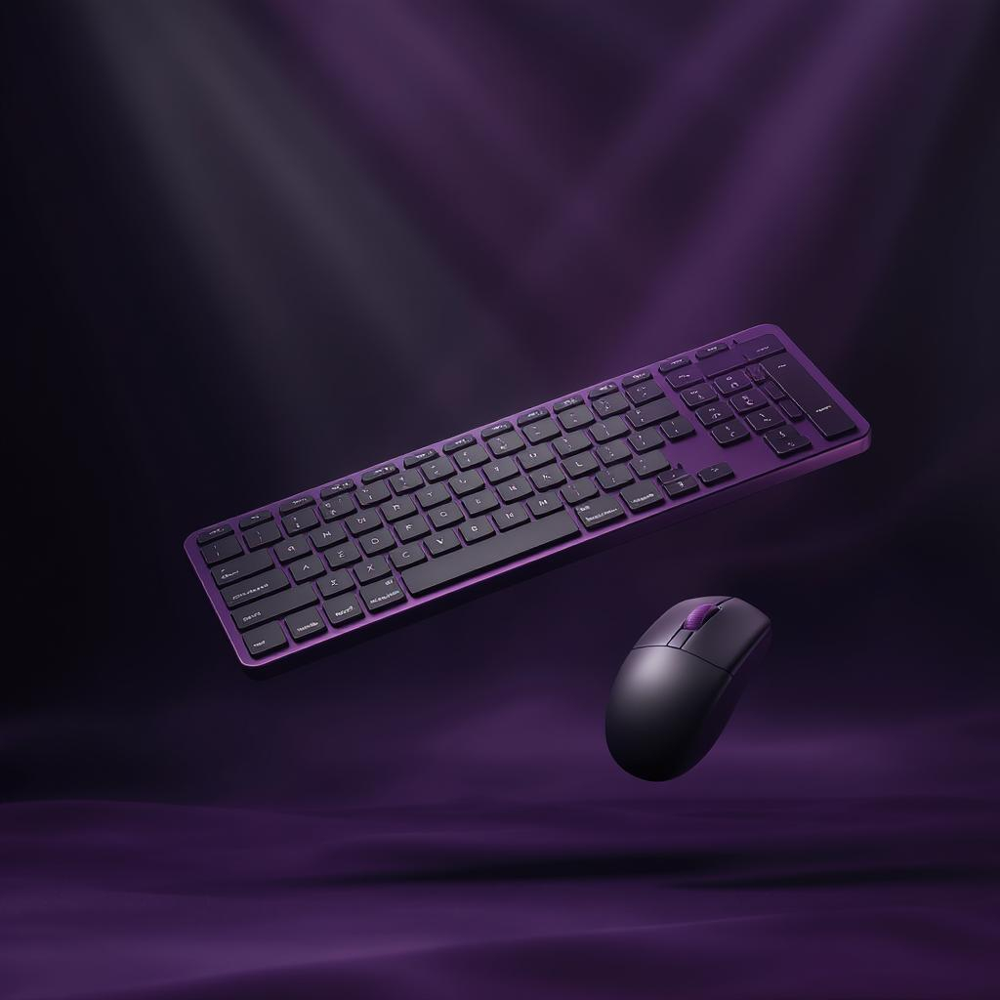

Kit ThunderX Blitz

Kit Mouse e Teclado Gamer
Teclado RedDragon e Mouse Logitech
R$ 1259,99
R$ 899,90
Eleve seu setup com o Kit ThunderX Blitz, a combinação perfeita de mouse e teclado para dominar qualquer jogo. O teclado mecânico conta com switches ultra-rápidos e anti-ghosting, garantindo respostas instantâneas em cada pressionamento. O mouse óptico de 12.000 DPI oferece precisão extrema, com 6 botões programáveis e iluminação RGB sincronizada. Ambos os dispositivos possuem cabos trançados resistentes e design ergonômico para sessões intensas. Conquiste seus inimigos com estilo e performance inigualáveis!
Avaliações:
Ana_ProPlayer
⭐ 9/10 – "Teclado responsivo e mouse preciso! A iluminação sincronizada é um show à parte. Só senti falta de um descanso para pulso no teclado, mas o desempenho é impecável."